全域景区后台 · 运营培训 · 2026-11-21
赛事活动报名
运营操作培训
从准备一场赛事，到配置、推广与报名后处理。
知道怎么做，也知道做到哪一步才算完成。
01 · 先了解：运营要完成什么
把一场赛事配置成游客能看懂、能填写、能签署、能完成报名的线上流程。报名后，运营能按人查资料、按单查支付，并处理通知和售后。
后台运营负责
赛事内容、项目、资料、签署材料、人数名额、关联票、成功海报、通知，以及报名记录核对。
赛事内容、项目、资料、签署材料、人数名额、关联票、成功海报、通知，以及报名记录核对。
游客自己完成
选择报名项目与选项，阅读材料，填写整组资料，逐人签署，由主报人统一提交和支付。
选择报名项目与选项，阅读材料，填写整组资料，逐人签署，由主报人统一提交和支付。
| 协作角色 | 开售前先确认 |
|---|---|
| 赛事业务方 | 参赛资格、组别、比赛与集合安排、名额、价格、退票政策、正式材料。 |
| 门票 / 票务配置人员 | 全域票与票务产品编码、人数、使用期、可售期、价格库存、上架及分销授权。 |
| 运营 / 客服 | 推广入口可用，手机展示正确，咨询电话可联系；知道怎样查报名、订单和退款。 |
使用说明：配图用于说明操作位置，图中的名称、价格和日期为示例，请按实际赛事资料配置。
02 · 一张图看懂：先配置，再推广，最后持续运营
准备业务资料
组别、规则、价格与票
组别、规则、价格与票
配置赛事与项目
资料、签署、名额
资料、签署、名额
关联票并检查
时间、人数、库存
时间、人数、库存
推广与游客报名
阅读、填表、签署、提交
阅读、填表、签署、提交
报名后运营
查人、查单、通知、退款
查人、查单、通知、退款
先分清三个层级
| 层级 | 管什么 | 双人赛事示例 |
|---|---|---|
| 赛事 | 整场活动的名称、封面、地点、联系电话、介绍、退款截止时间，以及成功海报和通知。 | 呀诺达—一二三热带雨林水陆挑战赛 |
| 报名项目 | 参赛组别；各自设置比赛时间、报名窗口、资料、签署要求和人数名额。 | 专业竞技线 / 大众体验线 |
| 报名选项（收费） | 同一项目下可选的票；展示名称、限制说明，价格库存读取原票。 | 专业早鸟—双人 / 专业正价—双人 |
早鸟、正价通常是同一项目下的不同报名选项。游客选择不同票，仍使用该项目的资料、签署与固定人数规则；不是每张票都再建一个参赛组别。
03 · 开工前：把业务资料与票准备齐
| 准备什么 | 运营拿到什么才可继续 |
|---|---|
| 赛事展示资料 | 正式名称、封面原图、举办日期地点、咨询电话、图文介绍。 |
| 项目与报名规则 | 每个组别的项目名、比赛起止、集合地点、报名起止、固定人数、总名额、是否免费。 |
| 参赛资料 | 每人要填哪些字段，哪些必填，选项和字数限制是什么。 |
| 签署与告知 | 正式材料名称和正文、阅读方式、签署说明、年龄身高体重等参赛要求。 |
| 收费票资源 | 每个报名选项对应的全域票、门票编码、票务产品、整份价格、票库存、日期与售卖规则。 |
| 通知与售后 | 报名成功短信、延期通知文案、原票退票规则、赛事退款截止时间及客服处理口径。 |
本次赛事例子：专业竞技线200人、大众体验线100人，合计300人；每次2人。按项目分别配置200与100，不能把总量300误填给每个项目。全域价格是一张票对应的整份双人价格，不能直接填单人价。
核销安排已确认：2027年1月2日领取比赛包，不核销；2027年1月3日比赛当天核销。领取比赛包不提前消耗门票权益。
业务方仍需确认：集合地点写起跑地还是领包点；年龄计算基准及正式退款截止口径。监护人同队等要求通过页面告知，不能把声明或手写签名当成系统已自动核验关系。
04 · 新建赛事：让游客先看清这是什么活动
入口：全域景区后台 → 赛事管理 → 赛事列表 → 新建赛事；维护已有赛事点“编辑赛事”。先确认当前景区。
- 填写正式赛事名称，上传封面，设置举办时间。单日赛事开始与结束设置为同一天。
- 填写举办地点、联系电话和赛事详细介绍。联系电话用于赛事咨询，海报也会读取，不能放游客个人电话。
- 按业务政策设置赛事退款截止时间；没有额外截止限制时可留空，但仍执行原票退票规则。
- 保存后重新打开核对；再进入“报名项目”创建组别。
| 容易混淆 | 正确处理 |
|---|---|
| 举办时间与报名时间 | 赛事举办时间描述活动；报名窗口在各项目里配，不在赛事上统一替代。 |
| 举办地点与集合地点 | 赛事地点用于整场活动；不同组别集合地点在项目基本信息里分别维护。 |
| 退款截止时间 | 非必填，可修改或清空；影响游客主动申请，不能代替原票退票规则，也不是自动设置报名截止。 |
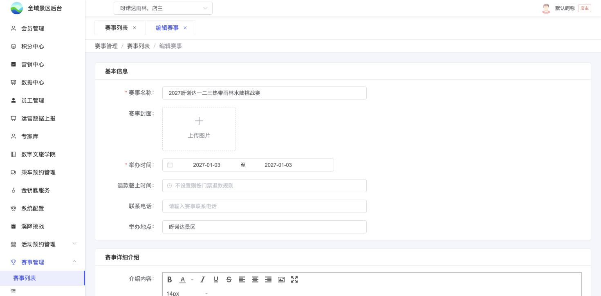
05 · 建报名项目：按顺序完成，不漏最后一步
入口：赛事列表 → 对应赛事“报名项目” → 新增项目 / 编辑。
- 基本信息：填项目名称、项目说明、集合地点、项目报名起止及比赛起止。项目说明可以写双人组队方式，但固定人数仍要单独配置。
- 报名资料：维护报名须知、填写项和是否需要签署。须知是解释报名规则，签署材料是游客需阅读并签字的文件，两者分开。
- 需要签署：继续配签署说明和材料；不需要签署则跳过该步骤。
- 报名人数：设置单次固定人数、总名额及是否关联门票。免费不进入关联票步骤；收费继续配门票。
- 检查所有适用步骤后点击“完成”；返回列表、重开核对配置。需要调整项目展示顺序时，拖动后再点“保存排序”。
“下一步”与“完成”分开看：下一步处理当前步骤，不代表整个项目都配置完。推广前需把所有适用步骤完成，并核对游客端实际展示。
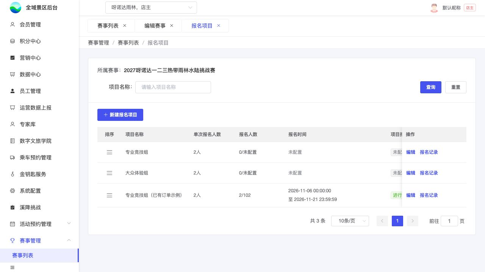
06 · 资料与签署：每人填什么、读什么、谁来签
一份项目模板，生成整组每个人的填写区
| 资料类型 | 怎样配置与核对 |
|---|---|
| 姓名 / 手机号 / 身份证 | 姓名固定必填。手机号、身份证按业务与原票需求配置；票要求必填的字段，报名也必须有对应必填项。身份证格式通过不等于联网实名。 |
| 单行 / 多行 / 数字 | 单行最多字数1–50；多行1–200；数字为非负整数，最多位数1–15。按业务需要设置，填写说明用于解释怎么填。 |
| 单选 / 多选 / 日期 | 单选、多选至少两个选项；多选同时检查最少、最多数量；日期填年月日。不要用文字说明代替实际必填或数量限制。 |
- 列出每位参赛者需填写的字段、说明和必填要求；排序后保存，手机上逐项对照。
- 需要签署时至少维护一份材料；每份填写名称与完整正文，并选择“不限制”“等待指定秒数”或“滚动到底”中的一种阅读方式。
- 按游客需要阅读的顺序整理材料；签署说明在项目层统一填写，包含签谁的名字、怎样操作等说明。
- 用双人场景检查：主报人填两人资料并暂存；两人分别完成本人签署，可邀请队友通过分享入口签署。全部必需阅读、资料和签署完成，才可由主报人提交。
四件事不要混：报名须知用于说明；阅读材料用于确认已读；签署是逐人签本人；报名成功要看最终提交和支付结果。完成阅读或签字，都不等于报名成功。
阅读材料不是读完就消失。游客需能回看材料与报名须知；有未完成的材料时按规则继续阅读。修改原材料正文保留已读已签；新增材料时，未提交报名补读，已提交报名不追补。
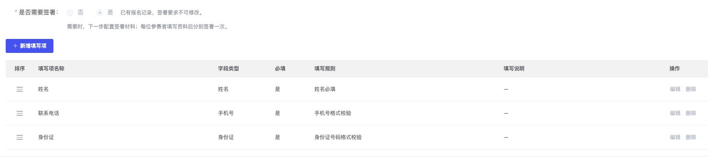
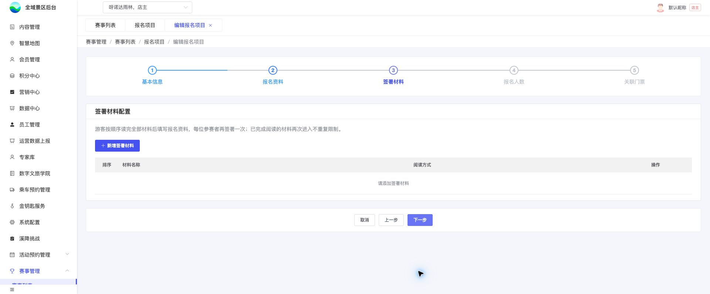
07 · 人数与名额：一单、一张票和两个人怎么数
| 口径 | 如何理解 | 双人例子 |
|---|---|---|
| 单次报名人数 | 一个项目固定1–10人的整数，每份报名都按这个人数填写。 | 每次2人，不能只填1人提交。 |
| 项目总名额 | 按人控制；有限名额必须是单次人数的整数倍。 | 200人可容纳100份双人报名。 |
| 票库存 | 按票计；一次收费报名固定购买1张关联票。 | 10张双人票对应20人容量，不是10人。 |
| 价格 | 读取所选原票的一张票价格，即整份报名总价。 | 单人399元的双人报名，整份为798元。 |
| 成功人数 | 实际成功报名人数，不是报名记录条数。 | 1份成功双人报名计2人；暂存与待签不计成功。 |
同时受两道限制：项目名额还有剩余，也可能选中票已售罄；票还有库存，也可能项目已满。增加项目名额不会自动增加票库存。
已有报名后的改动：首次主动暂存成功产生记录后，固定人数、是否签署等会受配置锁定；有限总名额只允许增加且仍为人数整数倍。先把规则核对好再推广，不能把“仅阅读过”当已有报名。资料项已有记录后不能随意改删；新增项对未提交报名补填，已提交资料按原快照保留。
开售后改配置：先判断有没有记录或订单
| 改什么 | 操作边界 |
|---|---|
| 固定人数、签署要求 | 首次暂存产生报名记录后受锁定，不能随意修改。 |
| 项目名额 | 已有报名后有限名额只增不减，仍需为固定人数整数倍；不会同时增加门票库存。 |
| 资料填写项 | 已有记录后原有项不可改删；可按规则新增，未提交报名补填，已提交资料不追改。 |
| 免费 / 收费 | 尚无订单时可按规则切换；已有订单后不可切换。 |
| 关联门票 | 有过订单的那张票不可移除更换，展示名称、限制说明可维护；其他无订单票按自身规则判断。 |
| 材料、海报和短信 | 材料正文变更不清掉有效签名；海报更换后重新预览；短信改模板不追发历史通知。 |
08 · 关联门票：先配原票，再配报名选项
入口：报名项目 → 编辑 → 关联门票。只有收费项目需要。
跨两套系统，先把票源打通
- 由票务配置人员在票务系统准备对应产品与规则。本次云程双人场景使用套票，包含2个子票；不能拿只支持1位游客的单张组合票冒充双人套票。子票权益按票务系统既有规则配置。
- 把消费、使用日期及销售等规则关联到正确产品，完成上架；在分销商管理找到“官网小程序”，通过对应产品 / 套票管理完成授权绑定。
- 在全域散客票配置中选择正确的票务产品，核对门票编码必须与票务产品编码一致；再核对游客人数、价格库存、使用日及可售规则。
- 回报名项目添加关联门票，为每张票填写清晰的“报名展示名称”，如“专业早鸟—双人”；填限制说明后，检查规则详情及匹配原因，最后完成项目配置。
| 检查什么 | 具体看什么 |
|---|---|
| 上下架与编码 | 关联表看当前门票状态，规则详情看发码类型和编码；原票下架不靠改报名名称修复。 |
| 游客人数与字段 | 原票“每张券需X位游客”时X必须等于固定报名人数；姓名、身份证等必需字段需有正确来源。 |
| 比赛 / 使用日期 | 单日日历票看比赛当天有无真实报价与库存；固定有效期票覆盖比赛日；多日比赛用完整覆盖起止的固定有效期票。 |
| 可报名时间 | 项目报名窗口 ∩ 原票可售窗口；没有交集就不能关联。不是把报名日期与比赛使用日期求交集。 |
| 价格库存与容量 | 读原票，不能在报名里改；不能把缺失报价当0元或不限库存。首次配置还需核对票能支持的人数容量。 |
| 年龄、地区等限制 | 限制文案给游客看；实际交易按原票规则校验全部参赛者，写了说明不等于系统已自动实现所有限制。 |
双人日历票例子：全域1月3日日历票读取1月3日库存；本次1月2日仅领取比赛包、不核销，1月3日比赛当天核销。票务产品使用期需覆盖1月3日；如业务另行延长有效期，仍按正式规则配置，不因领包提前核销。可售起止控制何时能买，与使用期分开。两套系统的配置一致性需人工核对，不能靠报名页面自动纠正。
早鸟 / 正价衔接：分别准备票和售卖规则，报名项目作为外层窗口；每个选项展示各自交集。截止按原票规则计算到具体日期和时刻，再核对有无空档或重叠，不只看“提前几天”。
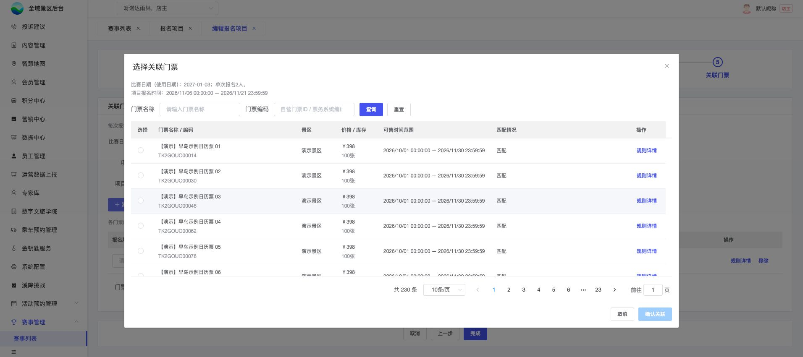
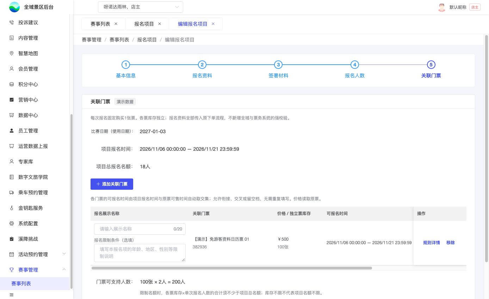
09 · 成功海报与短信：报名后告诉游客什么
入口：赛事列表 → 对应赛事“报名成功海报配置” / “短信通知”。
海报是报名结果，不是核销凭证
- 上传正式背景，建议1500 × 2668 px竖版，支持JPG / PNG / WebP。先预留文字区域，别把需动态变化的姓名或项目名写死在背景图里。
- 添加并摆放动态内容，核对赛事名、项目名、参赛者、比赛地点、集合地点、时间和联系电话等来源；保存前预览，防止文字压图或溢出。
- 用不同长短的项目名、多人姓名检查实际展示；未配置海报或加载失败时使用报名成功兜底页，不能把显示失败当报名失败。
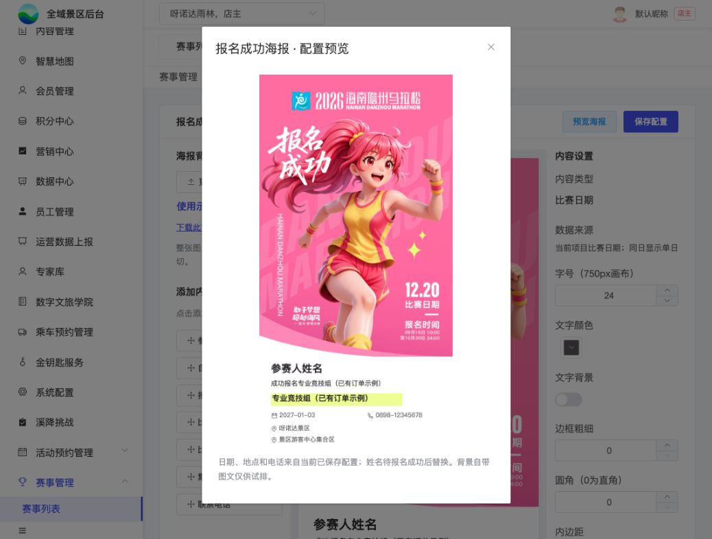
| 短信操作 | 何时发送 / 注意什么 |
|---|---|
| 报名成功通知模板 | 保存只配置模板。实际报名成功后按每位参赛者本人手机号发送；缺手机号不发送，不转发给主报人。修改模板只影响后续通知。 |
| 延期通知模板与批量发送 | 保存模板不会发送；点击批量发送并确认，通知当前成功且有手机号的参赛者。当前列表筛选不缩小这个接收范围。 |
| 参数 | 参赛人姓名取接收者本人；报名项目名取组别，不是原票名或早鸟票名称。 |
| 记录与重发 | 查实际发送内容和结果；批量重发按选中记录原内容处理。发送中勿重复点，短信失败不改变报名成功。 |
延期不等于自动改票：发送延期短信不会修改比赛日、门票有效期或退款规则；业务、运营和票务配置人员还需分别核对。
10 · 游客会经历什么：运营怎样回答咨询
| 游客所在环节 | 游客做什么 | 运营重点解释 |
|---|---|---|
| 赛事首页 | 看赛事信息，选择项目及可报名选项。 | 未开始、已截止、售罄与配置不匹配是不同原因；免费不需要选收费票。 |
| 阅读材料 | 需签署项目按序阅读和确认材料。 | 按指定等待秒数或滚动要求完成；阅读不创建正式报名成功。 |
| 填写与暂存 | 主报人为整组填写资料，可先暂存再继续。 | 暂存不是报名成功；资料修改后先保存，才能按规则签署或分享。 |
| 逐人签署 | 每人签自己，队友可通过邀请入口完成。 | 他人签署权限不能由主报人随意代替；主报人回来刷新进度，确认全员已签。 |
| 提交与支付 | 主报人提交；免费直接完成，收费进入微信支付。 | 填表、签字、创单与付款是不同节点；结果未知先查原订单，不重复提交付款。 |
| 我的报名 | 回看状态、资料、成功海报及关联订单。 | 组员按权限只读查看；主报人处理继续报名或继续支付。收费核销码仍在原订单。 |
离开支付框不等于取消订单。若已有有效待支付订单，应继续同一订单支付；订单真正关闭才恢复可提交状态。微信提示已扣款但页面仍待付款时先查支付与原订单结果，不要求游客反复付款。
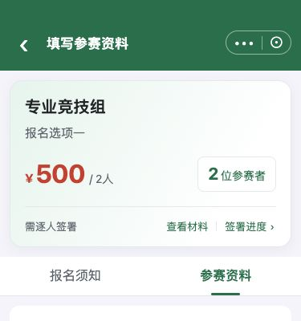
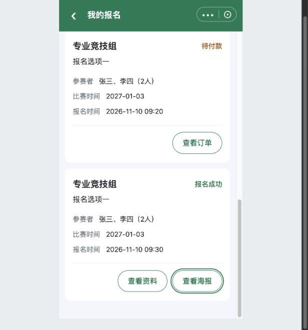
支付后等待与结果确认
最新需求为微信支付返回后等待原订单和报名结果，最长10秒；一旦确认成功立即进入报名海报，未配海报或加载失败进入成功兜底。草稿订单属于下单校验失败，应在资料提交页提示原因并拦截，不调起支付；只有待支付才算创单成功。
关闭支付且核实未付，可在原订单继续支付；结果未知则继续确认，不能按失败重下。订单后来支付成功时，要按服务端关联识别赛事报名，报名成功进入海报或兜底；普通订单仍去原预订成功页。支付成功但报名尚在处理时，需继续确认，不能把已扣款写成报名失败。
11 · 查报名与售后：先找人，再对订单
入口：赛事列表 → 报名项目 → 对应项目“报名记录” → 详情；收费交易继续通过实际订单号查原订单。
- 先核对赛事、项目和比赛日期；按姓名或手机号查人，查不到先重置条件，再展开订单号、身份证和状态等筛选。
- 打开详情查看整组资料、逐人签署及当前订单。不要把一行报名当一个人，也不要用订单应付金额判断已收款。
- 收到“已付款但未报名成功”咨询，保留订单号和实际支付信息，先回查原订单，再核对其关联报名与成功状态；不让游客重新开一笔。
- 退款咨询先看原票退票规则，再看赛事当前退款截止时间；申请、审核、退款中都不等于退款成功。实际退款成功后，核对报名已取消、成功人数回退和名额释放；钱是否到账仍按实际退款结果核对。
| 报名状态 | 运营怎样判断 |
|---|---|
| 资料待完善 / 待签署 / 待提交 | 尚未完成最终报名；指导补资料、本人签署或提交。 |
| 待付款 | 已有有效待付订单；继续原单，不另建单。 |
| 报名成功 | 免费最终提交或收费实际支付成功；核对资料及海报，收费看原订单权益。 |
| 已取消 | 当前关联订单实际退款成功；不计成功人数，释放本份报名的固定人数名额。未付款订单关闭不套用这一状态。 |
退款与库存分别核对：申请退款、审核中、退款失败不能提前还名额。双人报名实际退款成功释放2个项目名额；票库存如何恢复沿原票务规则，不能因为项目名额回了就断言票库存也回了。退款后重新报名仍受当前报名时间、名额和票规则限制。
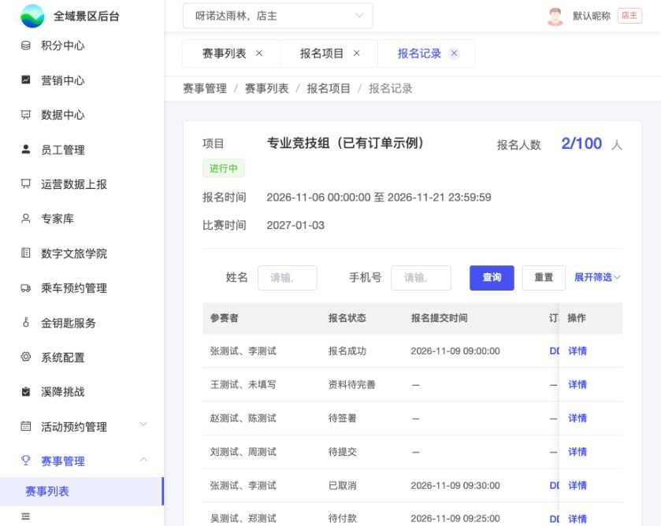
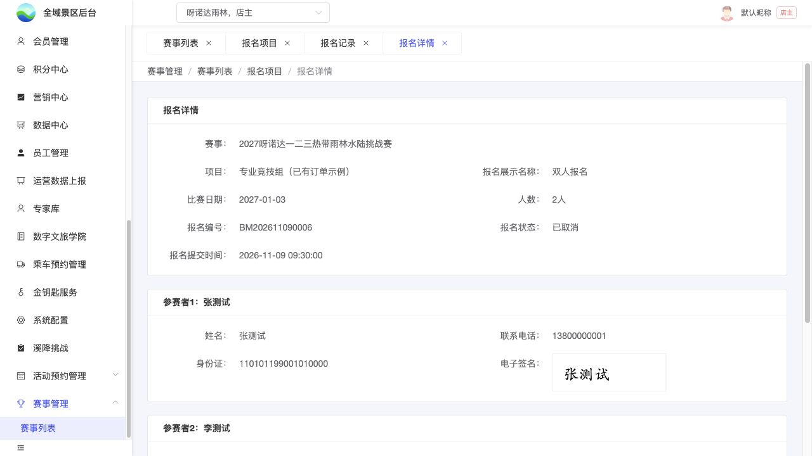
12 · 推广前与日常运营：按清单核对
开售前：一场赛事从后台到手机走一遍
| 核对动作 | 通过标准 |
|---|---|
| 赛事与组别 | 名称、封面、图文、电话、日期地点正确；各项目集合点明确。 |
| 表单与材料 | 所有资料项、必填、选项、字数与排序在手机显示一致；图文不裁切，签署说明可完整读到，材料可回看。 |
| 名额与票 | 固定人数和每票游客人数一致；项目容量与票库存充足；比赛日报价、使用期、可售期、编码和授权正确。 |
| 选项与价格 | 早鸟 / 正价名称清晰，按整份人数显示总价；未开始、截止与售罄状态符合预期。 |
| 成功与通知 | 成功海报文字来源、样式及兜底正确；短信模板、接收对象和正式文案核准。 |
| 推广入口 | “推广”进入本赛事报名首页；“报名查询页”进入独立查询；不要复制错赛事或错入口。小程序码以正式环境可用为准。 |
| 售后与接待 | 明确退款截止，执行1月2日领包不核销、1月3日比赛当天核销，统一客服咨询口径；按需要与业务确认一次真实支付、查单及退款。 |
推广：先分清报名入口和报名查询入口
- 赛事列表找到正确赛事，点“推广”取得本赛事报名首页路径；需要让公众查询已成功报名时，点“报名查询页”取得对应查询入口。
- 在推广弹窗按实际渠道复制小程序路径、H5跳小程序路径、短路径或短信短链接；需要小程序码时切到小程序码标签。未生成的值不要手工拼接代替。
- 用微信打开最终投放入口，核对赛事名、项目和报名选项后再发布到公众号或其他渠道；查询入口不是新报名入口。
每天：看成功人数，也查异常单
- 对照各项目成功人数与剩余容量，检查早鸟、正价切换及原票上下架。
- 查待付款、支付结果未明与退款中的订单；保留可定位的订单号、时间和页面提示交接。
- 重要配置调整后重新打开游客端检查；不要只确认后台保存提示。
- 延期或重要变化先确认票规则和通知范围，再发短信；确认发送结果。
13 · 随用随查：游客问什么，先看哪里
| 遇到什么 | 先查与处理 |
|---|---|
| 游客看不到报名选项 | 先查项目报名时间与剩余名额，再查原票上下架、比赛使用日、可售交集及库存。不要直接把所有原因归为页面故障。 |
| 选票显示不匹配 | 打开原票规则详情看具体原因；人数、必填资料、比赛日配置、使用期和售卖窗口逐项核对，回原票系统修配置。 |
| 签完了怎么还没报名 | 查全员签署及资料是否齐全、是否真正提交、是否有待付订单；签署完成不是支付成功。 |
| 报名资料不能改了 | 已有有效待付订单或报名成功后只读；与后台模板字段被锁定分开判断。未付订单实际关闭后的恢复按原流程处理。 |
| 已扣款仍看到待付款 | 先按原订单回查确认，不要求再付；记录异常时间与订单号。确认中不能直接当付款失败。 |
| 没收到短信 | 先确认实际报名成功、模板已配和本人手机号已收集，再查通知记录；缺号无记录，短信失败不代表报名失败。 |
| 名单人数和订单条数不一致 | 固定人数按人计算；双人1份成功报名计2人。暂存、待付和已取消不当成功人数。 |
| 延期通知发了，为什么票没改 | 短信只通知，不改比赛日、票有效期和退款政策；需各系统分别配置核对。 |
| 退款申请了，为什么名额没回 | 查实际退款结果；只有退款成功才释放项目名额，审核或退款处理中继续占用。 |